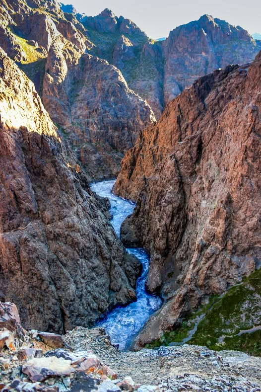

克尔门峡谷 Khermen Tsav
远戈壁深处的红色峡谷
克尔门峡谷是戈壁最有冲击力的地貌之一。红崖、深谷与极静的旷野，让人感觉像走到地图边缘。
这不是顺路小停。需要经验司机、足够天数和定制戈壁线路。
南部 / 戈壁
红色悬崖、巨大沙丘、峡谷与安静的地平线，使南戈壁成为蒙古戈壁最有代表性的探险区。
适合沙漠摄影与第一次来戈壁的旅客。旺季为 5–10 月。可从乌兰巴托乘国内航班或越野车前往。
私人行程可按季节、路况、住宿等级和步行强度调整。可用微信咨询，支持支付宝与微信支付。
咨询这条线路
远戈壁深处的红色峡谷
克尔门峡谷是戈壁最有冲击力的地貌之一。红崖、深谷与极静的旷野，让人感觉像走到地图边缘。
这不是顺路小停。需要经验司机、足够天数和定制戈壁线路。

南戈壁最经典的沙丘
洪格尔沙丘是南戈壁最广为人知的景点。沙丘尺度大，沙、天空与戈壁光线对比强烈，是第一次来戈壁几乎必看的地方。
日落或黄金时段的沙丘照片，最能代表戈壁。

凉爽峡谷与化石红崖
鹰谷（Yol Valley）与巴彦扎格火焰崖是标准戈壁线路最受欢迎的两站。峡谷步行与恐龙化石传说，让南戈壁不只是沙丘。
可与洪格尔连成 5–7 日经典戈壁线。